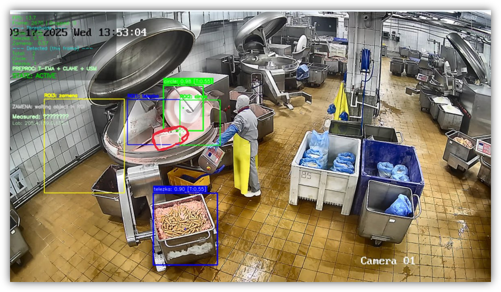

AI-модели для производственных задач
Автоматизация контроля без миллионных
бюджетов на SCADA
От разметки до внедрения CV-решений за
месяц
Отцифровано оборудования с помощью
компьютерного зрения > 200 ед.
-
Автообучение моделей — LVM-разметка вместо ручной, экономия времени в 10+ раз, точность детекции 95%+

-
Рост производительности — увеличение эффективности линий > 20%
-
Сокращение перерасхода фарша с 30% до 14% — экономия 8.7 тонн сырья и 3 млн рублей в год на одной линии
-
Оптимизация персонала — сокращение избыточной численности, перераспределение ресурсов по загрузке линий
-
Локально и безопасно — данные внутри предприятия, работа 24/7 без интернета, полный контроль доступа
-
Интеграция без остановок — связка с PostgreSQL, 1С, OLAP, Grafana без простоя производства
Скриншот CV системы
(it_cv_screenshot.png)
';"
loading="lazy" decoding="async">
(it_cv_screenshot.png)